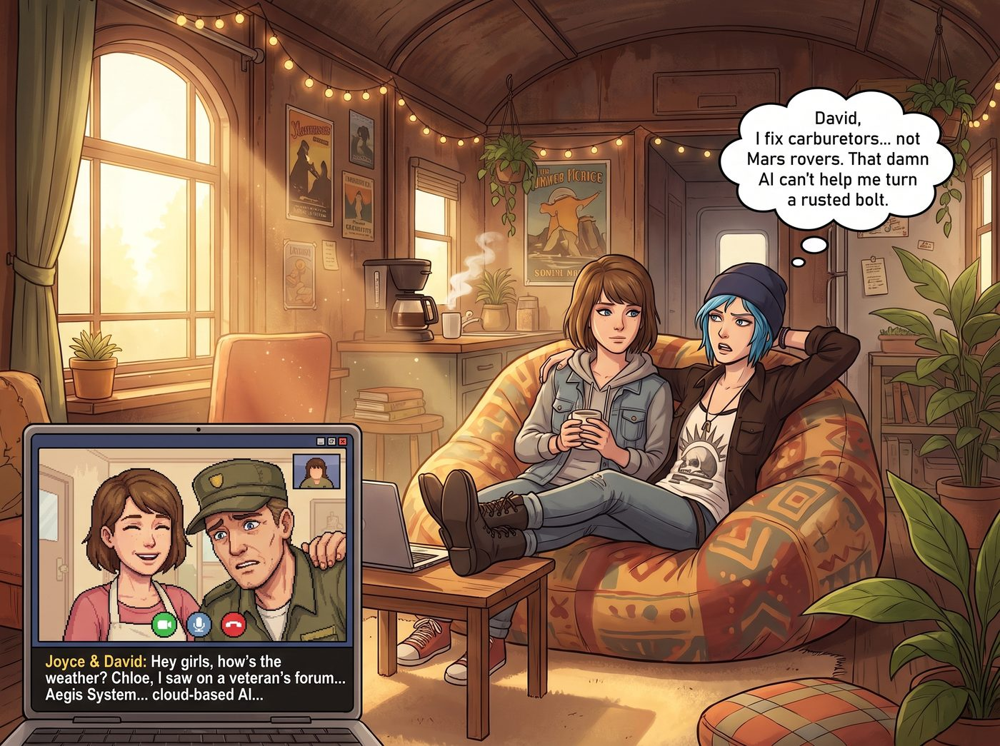
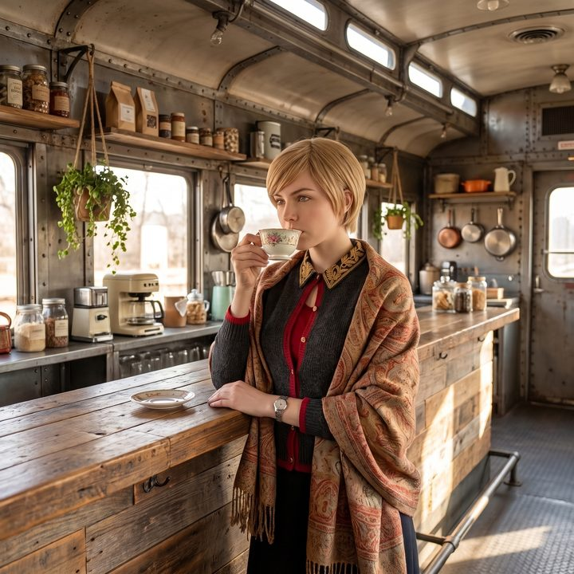

船票與鏟子（下）：擦鞋童


星期天的午後，二號車廂的公共生活區瀰漫著剛煮好的濾掛式咖啡香氣。中節車廂的沙發上，Max 和 Chloe 擠在同一個懶骨頭裡，面前的小木桌上架著一台筆記本電腦，正在進行每個月雷打不動的「雙邊家庭視訊會議」。
畫面上，Joyce 正在用圍裙擦著手，David 則試圖把鏡頭調正。
「嘿，女孩們，營地那邊天氣好嗎？」Joyce 溫柔地笑著，但寒暄不到兩分鐘，David 就忍不住把頭擠進了畫面，那張布滿皺紋的臉上寫滿了嚴肅的焦慮： 「Chloe，我最近在退伍軍人論壇上看到，現在那種什麼『神盾系統』的自動化物流和雲端 AI 快要把傳統運輸業取代了。妳那個修車廠有受到影響嗎？我聽說現在連修車都需要接上什麼深度學習診斷儀了。妳們有沒有考慮買點那些晶片製造商的股票避險？」
Chloe 翻了個巨大的白眼，把腿翹到桌沿上：「David，老子修的是化油器和漏油的皮卡，不是火星探測器。那個見鬼的 AI 沒法幫我把生鏽的螺絲轉出來。」
十五分鐘後，視訊對象切換到了西雅圖。
Max 的父母向來是走在時代尖端的時髦中年人。畫面一接通，Max 的爸爸就舉著手機，興奮得像個剛發現新大陸的青少年： 「Max！Chloe！妳們看到最近的科技板塊了嗎？我和妳媽昨天剛在 Robinhood 上開了戶，買了三千塊錢的晶片股和雲端運算 ETF！📈🚀 媒體說這叫『第四次工業革命』！Max，妳用相機拍照也要跟上時代啊，現在是不是有什麼運算攝影之類的？」
Max 無奈地揉了揉太陽穴，看著手裡的寶麗來相機：「爸，我用的是底片。底片不需要雲端運算，也不會發射火箭。」
「噢，甜心，妳就是太復古了！」Max 的媽媽在旁邊笑著揮手，附帶了一連串誇張的肢體語言，「大家都在買，我們可不能錯過這波浪潮啊！」
這兩通充滿長輩焦慮與狂熱的電話，對沙發上的這對情侶來說，只是日常生活中無傷大雅的嘮叨。但在開放式廚房的吧台旁，正端著一杯伯爵茶的 Victoria，臉色卻以肉眼可見的速度變得慘白。
「擦鞋童理論（Shoeshine Boy Indicator）。」
Victoria 喃喃自語，名貴的骨瓷茶杯在她手裡微微發抖。她猛地轉過身，像一隻被踩到尾巴的波斯貓一樣焦躁地在波西米亞地毯上來回踱步。
「當華爾街的擦鞋童都在給你推薦股票的時候，就代表市場已經過熱，崩盤近在眼前。」Victoria 咬著精心修剪的指甲，眼神透著恐慌，「如果連阿卡迪亞灣那個只會看軍事雜誌的退伍老兵，和西雅圖那對還在發 Emoji 表情包的中年夫妻，都在跟我買同一個板塊的晶片股……這已經不是新大陸了，這是一艘超載的鐵達尼號！他們是最後一批接盤的散戶！」
昨天才剛剛大手筆加倉科技硬體的 Victoria，此刻感受到了資本市場最深層的惡意。她引以為傲的「精英資訊差」，居然跟 Max 爸爸的 Robinhood 帳戶撞車了。
「我得給紐約打電話。」Victoria 掏出手機，手指瘋狂滑動聯絡人，「我要清倉。立刻。馬上。這幫散戶會把整個市場的流動性踩踏成碎片的。」
「Victoria 學姐，深呼吸。」
Lily 從工作站後方探出頭，推了推那副圓框眼鏡。
「妳現在的恐慌，同樣是注意力經濟引發的『確認偏誤（Confirmation Bias）』。」Lily 用那種毫無起伏的軟糯聲音，精準地朝 Victoria 潑了一盆冷水，「Max 學姐的父母和 David 先生討論這些，並不是因為他們真的懂底層硬體，而是因為大眾媒體成功將『落後於時代的焦慮』販賣給了中產階級。這確實符合沈船理論的表徵。」
Victoria 停下腳步，死死盯著 Lily：「既然妳也同意這是泡沫，那我就該立刻把籌碼撤出來！」
「但妳買的是『鏟子』，不是『金礦』。」Lily 站起身，走到白板前敲了敲，「根據過去四年的資本支出財報分析，無論上層的軟體泡沫怎麼破裂，微軟、亞馬遜和 Google 這些巨頭建立資料中心的基礎設施合約，簽的都是三到五年的長約。散戶的狂熱確實推高了短期的估值，但底層硬體的利潤兌現週期還沒結束。」
Lily 看著患得患失的 Victoria，給出了最終的行政裁決：「泡沫會破，但不是在 Max 學姐的爸爸買入的三千塊錢之後立刻破。妳昨天建倉的邏輯依然成立。只是從心理學角度來說，妳現在覺得自己的投資組合『不夠高級』了而已。」
這句話精準地擊穿了 Victoria 的防禦。她確實不是真的擔心那點風險，她只是無法忍受自己的投資策略居然和「平民」同步了。
「……閉嘴，Lily。沒人教過妳不要隨便拆穿別人的資產階級虛榮心嗎？」Victoria 煩躁地把手機扔回吧台，端起那杯已經半冷的伯爵茶，試圖找回名媛的尊嚴。
沙發上的通話還在繼續。
「聽著，爸，媽，」Max 對著鏡頭露出了一個溫暖而無奈的笑容，「我們在車廂裡過得很好。Chloe 今天修好了一台卡車，Kate 在烤蘋果派，Victoria 在發脾氣，Lily 剛上完一堂免費的經濟學課。我們這裡沒有第四次工業革命，但我們有熱水和晚餐。」
Chloe 湊過來，把下巴擱在 Max 的肩膀上，對著鏡頭咧嘴一笑：「對啊，Ryan，與其盯著那些綠色的數字焦慮，不如帶 Vanessa 去西雅圖市中心吃頓好的。放心吧，就算 AI 統治了世界，它們也得有人幫忙換機油的。」
視訊那頭的長輩們看著這兩個擠在沙發上、笑容燦爛的女孩，那些被新聞和社群媒體煽動起來的「時代焦慮」，似乎在這一刻被奇妙地撫平了。
掛斷電話後，車廂裡恢復了平靜。
「這就是我不看新聞的原因。」Chloe 伸了個懶腰，順手把筆記本電腦闔上，「大人們總是在擔心自己錯過了什麼，結果反而錯過了整個週末的下午。」
Victoria 依然靠在吧台旁，優雅地抿了一口茶。她決定不賣掉那些晶片股了，但她發誓，明天一定要讓基金經理把她的投資組合包裝得更複雜、更晦澀一點，絕對不能再跟 Max 爸爸的持倉名單出現在同一個話題裡。這是一個資本家的底線。
Max 看著她那副咬牙切齒、一臉發誓要捍衛階級尊嚴的樣子，忍不住舉起了寶麗來相機。
「咔嚓。」
「對了，Victoria。」Max 晃了晃那張還在顯影的照片，一臉無辜，「妳身上那條喀什米爾披肩，跟 Chloe 昨天在 Target 花十五塊美金買的那條打折毛毯，顏色一模一樣。」
Chloe 愣了一秒，然後笑得整個人倒在了地毯上。
「那叫『未經漂白的自然原色』！」Victoria 的名媛面具當場碎了一地，「妳們這兩個毫無品味的鄉巴佬！」